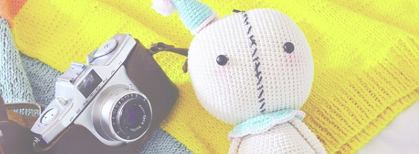
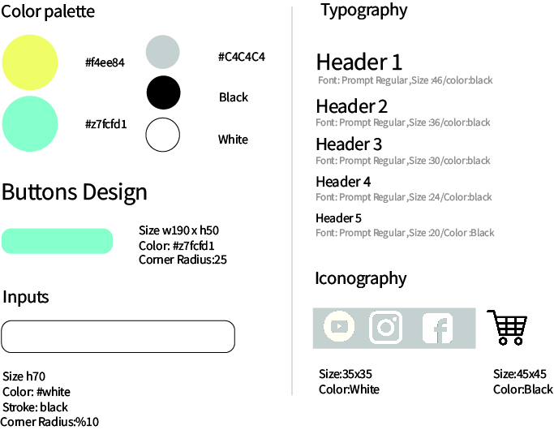
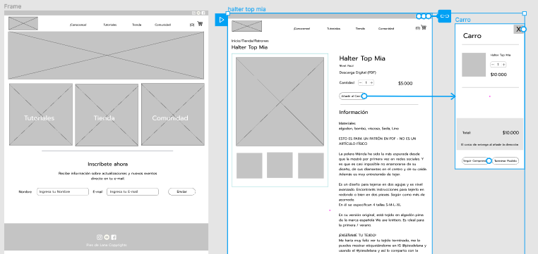
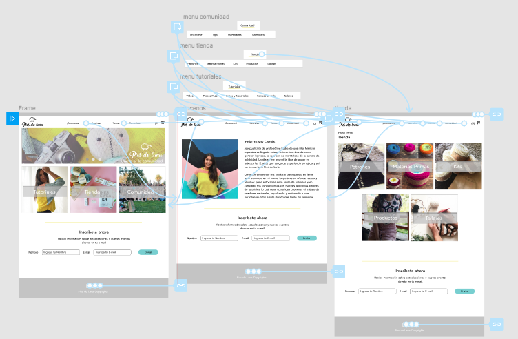

Pies de Lana
Junio/2019
Webpage
E-commerce
Equipo:Carla, jennifer y María José
Función :UX/UI
Re-serch, User Persona, testeos, guía de estilos, prototipado.
Empresa
“Pies de Lana” es un emprendimiento de Camila, marca con 12 años en el mercado, que busca promover el tejido moderno.
“Pies de Lana” funcionaba principalmente a través de la plataforma de Instagram vendiendo productos y haciendo tutoriales. La marca se caracteriza por el contacto directo con los usuarios y siempre intentando enseñar nuevas técnicas de tejido.
Problema
El propósito de “Pies de Lana” era a llegar a mas público en Chile y extranjero. Para crear una comunidad de tejedores, dar a conocer el tejido moderno, enseñar y dar a conocer sus productos y proyectos con otras marcas.
Lo primordial era que el usuarios tuvieran la información necesaria sobre tejido y que pudieran conocer la comunidad.
Solución
Crear una plataforma web para que los usuarios puedan acceder a toda la información de tutoriales, la comunidad de tejedores, poder comprar los patrones de tejido , acceder a cursos y productos.

Proceso de Diseño
Nos guiamos por el método Design Thinking, para poder enfocarnos en el usuario. El objetivo es que de una forma ordenada poder encontrar las soluciones necesarios para el problema.
Empatizando
Lo primero fue poder entender el problema del cliente y luego conocer e identificar los usuarios. Y además de esto poder conocer el contexto en que estaba situada la marca.
Para esto se realizó una entrevista con el cliente, investigación de la marca en redes, entrevistas con usuarios y análisis de Benchmark .
Aprendizajes de esta etapa:
- Existe una buena comunicación con los clientes.
- Esta enfocado en público joven.
- Busca dar conocer el tejido en mas público.
- Las páginas están mas enfocadas en enseñar y vender materias primas que en vender productos finales.
- Los usuarios buscan en sus tiempos libres actividades de relajación.
- Durante el proceso se trabajo siempre directamente con los usuarios
Definiendo
Luego de la investigación y análisis se desarrollo un “User Persona” y un "Journey Map" para identificar los dolores y necesidades de los usuarios.
Aprendizajes:
- Los usuarios buscan aprender sobre tejido de una manera clara y que les tome poco tiempo
- Los usuarios buscan aprender a través d evideos y tutoriales
- El tejido lo ven como una forma de distracción
- Quieren que los materiales de tejido los puedan encontrar en un solo lugar
- Buscan una comunidad para conocer mas gente con gustos parecidos

Ideando
Despues del proceso de definición y de empatización se pudo pasar al proceso de ideación, donde se juntaron todas las ideas de los anteriores procesos.
Ordenamos toda la información recopilada, la agrupamos en post it para reconer aprendizajes generales y poder reconocer insights y how might we?,
Aprendizajes:
- Buscar la forma de dar a conocer que la garantía de sus productos y la sustentabilidad van de la mano.
- Educar a través de la página
- Fomentar comunidad de tejedores y enlazarlo con la enseñanza
Luego de esto nos pudimos enfocar en las principales problemáticas, y desarrollarlo en una página web Y desarrollar la siguiente etapa.

Prototipando y Evaluando
Prototipo de Baja
Estos procesos se hicieron de forma conjunta ya que primero se realizaron sketchs, con los cuales pudimos llegar a un prototipo de baja calidad.
Este prototipo de baja calidad, se testeo con 5 usuarios, con lo cual se pudieron sacar los siguientes aprendizajes e iteraciones.
Iteraciones
- Se rescata que la página es amigable con los usuarios, muy práctica, y es fácil para comprar
- Se tiene que cambiar el idioma del navbar a español, en su mayoría son usuarios de habla hispana.
- Indicar en el caso del patrón con más detalle los insumos a utilizar o conectar con la venta de los kits.
Prototipo de Alta
Luego de hacer los testeos e iteraciones se pudo hacer un prototipo de alta fidelidad, en la plataforma Figma.
Mostrando el proceso de compra, la comunidad y la parte de tutoriales y cursos.
Análisis Final
Realizando este proyecto aprendimos a interactuar con el cliente y usuarios y conocer las diferentes herramientas UX.
Uno de los principales aprendizajes que saque de este proceso fue que los mejor es tener una correcta planeación del proyecto de forma anticipada y solo usar las herramientas necesarias para resolver el problema.
